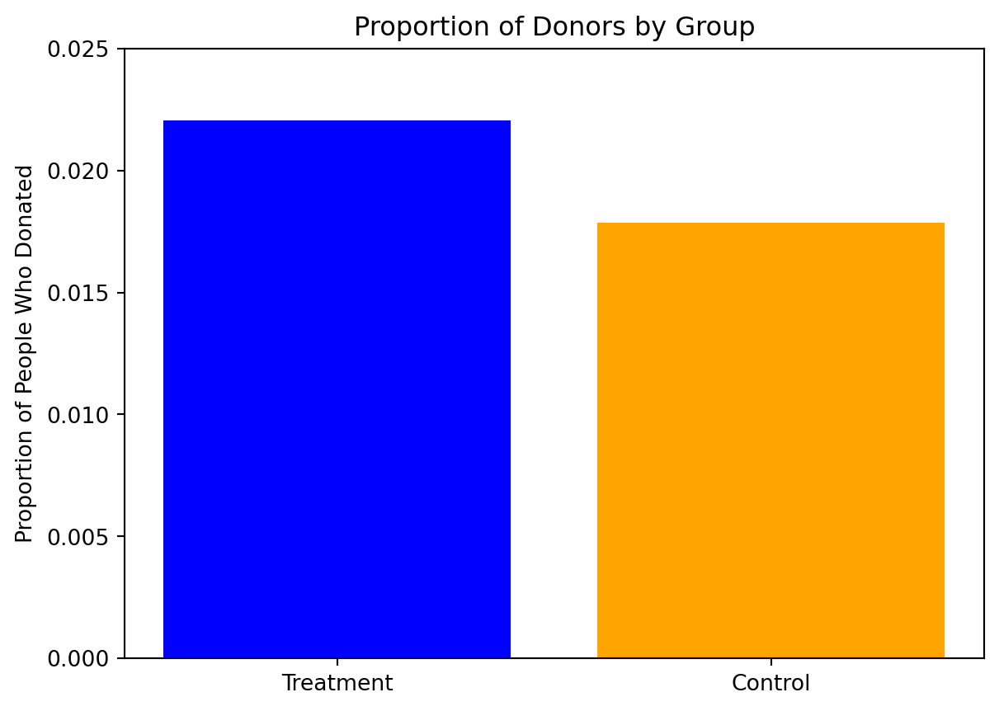
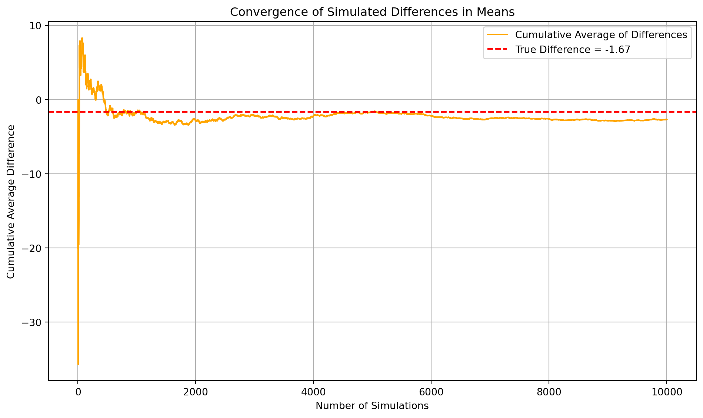

Dean Karlan at Yale and John List at the University of Chicago conducted a field experiment to test the effectiveness of different fundraising letters. They sent out 50,000 fundraising letters to potential donors, randomly assigning each letter to one of three treatments: a standard letter, a matching grant letter, or a challenge grant letter. They published the results of this experiment in the American Economic Review in 2007.
Within the treatment group, additional variations were introduced: the match ratio was either $1:$1, $2:$1, or $3:$1; the maximum matching amount was set at $25,000, $50,000, $100,000, or left unspecified; and the suggested donation amount was personalized based on each recipient’s past giving history—equal to, 1.25 times, or 1.5 times their highest previous donation. The results showed that including a matching grant offer significantly increased both the likelihood of donation and the average amount donated. However, higher match ratios did not lead to higher giving, contradicting common fundraising assumptions. The impact of the matching grant was especially strong in states that voted Republican in the 2004 presidential election, suggesting that political context played a role in donor responsiveness.
The article and supporting data are available from the AEA website and from Innovations for Poverty Action as part of Harvard’s Dataverse.
This project seeks to replicate their results.
Data
Description
The dataset includes information on 50,083 individuals who had previously donated to a nonprofit organization.
These individuals were randomly assigned to receive one of several fundraising mailers as part of a natural field experiment testing whether matching donations influence the likelihood and amount of giving.
import pandas as pdkarlan_list_2007 = pd.read_stata("~/Desktop/MSBA/SP/MGTA495b/hw1/karlan_list_2007.dta")karlan_list_2007.head()
treatment
control
ratio
ratio2
ratio3
size
size25
size50
size100
sizeno
...
redcty
bluecty
pwhite
pblack
page18_39
ave_hh_sz
median_hhincome
powner
psch_atlstba
pop_propurban
0
0
1
Control
0
0
Control
0
0
0
0
...
0.0
1.0
0.446493
0.527769
0.317591
2.10
28517.0
0.499807
0.324528
1.0
1
0
1
Control
0
0
Control
0
0
0
0
...
1.0
0.0
NaN
NaN
NaN
NaN
NaN
NaN
NaN
NaN
2
1
0
1
0
0
$100,000
0
0
1
0
...
0.0
1.0
0.935706
0.011948
0.276128
2.48
51175.0
0.721941
0.192668
1.0
3
1
0
1
0
0
Unstated
0
0
0
1
...
1.0
0.0
0.888331
0.010760
0.279412
2.65
79269.0
0.920431
0.412142
1.0
4
1
0
1
0
0
$50,000
0
1
0
0
...
0.0
1.0
0.759014
0.127421
0.442389
1.85
40908.0
0.416072
0.439965
1.0
5 rows × 51 columns
Key variables in the dataset include whether the individual received a treatment letter (treatment), the size of the matching ratio (ratio), and donation outcomes (gave, amount). The dataset also contains demographic and behavioral variables such as prior donation frequency (freq), donation recency (mrm2), and location-level characteristics (e.g., red0, pwhite).
Variable Definitions
Variable
Description
treatment
Treatment
control
Control
ratio
Match ratio
ratio2
2:1 match ratio
ratio3
3:1 match ratio
size
Match threshold
size25
$25,000 match threshold
size50
$50,000 match threshold
size100
$100,000 match threshold
sizeno
Unstated match threshold
ask
Suggested donation amount
askd1
Suggested donation was highest previous contribution
askd2
Suggested donation was 1.25 x highest previous contribution
askd3
Suggested donation was 1.50 x highest previous contribution
ask1
Highest previous contribution (for suggestion)
ask2
1.25 x highest previous contribution (for suggestion)
ask3
1.50 x highest previous contribution (for suggestion)
amount
Dollars given
gave
Gave anything
amountchange
Change in amount given
hpa
Highest previous contribution
ltmedmra
Small prior donor: last gift was less than median $35
freq
Number of prior donations
years
Number of years since initial donation
year5
At least 5 years since initial donation
mrm2
Number of months since last donation
dormant
Already donated in 2005
female
Female
couple
Couple
state50one
State tag: 1 for one observation of each of 50 states; 0 otherwise
nonlit
Nonlitigation
cases
Court cases from state in 2004-5 in which organization was involved
statecnt
Percent of sample from state
stateresponse
Proportion of sample from the state who gave
stateresponset
Proportion of treated sample from the state who gave
stateresponsec
Proportion of control sample from the state who gave
stateresponsetminc
stateresponset - stateresponsec
perbush
State vote share for Bush
close25
State vote share for Bush between 47.5% and 52.5%
red0
Red state
blue0
Blue state
redcty
Red county
bluecty
Blue county
pwhite
Proportion white within zip code
pblack
Proportion black within zip code
page18_39
Proportion age 18-39 within zip code
ave_hh_sz
Average household size within zip code
median_hhincome
Median household income within zip code
powner
Proportion house owner within zip code
psch_atlstba
Proportion who finished college within zip code
pop_propurban
Proportion of population urban within zip code
Balance Test
As an ad hoc test of the randomization mechanism, I provide a series of tests that compare aspects of the treatment and control groups to assess whether they are statistically significantly different from one another.
To test the integrity of the randomization, I compare pre-treatment characteristics such as female, couple, years, freq, and ave_hh_sz between the treatment and control groups. These variables were chosen because they capture demographic traits and prior donation behavior that could influence giving. For example, female captures gender, which may affect responsiveness to messaging; couple accounts for household structure; years and freq reflect donor loyalty and engagement; and ave_hh_sz serves as a proxy for local socioeconomic context. Ensuring these variables are balanced helps validate the random assignment.
The results of the t-tests for five pre-treatment variables indicate that there are no statistically significant differences between the treatment and control groups at the 95% confidence level. This suggests that the randomization process was successful in creating comparable groups across these covariates. These results match Table 1 of Karlan and List (2007), indicating that the treatment was successfully randomized and there are no meaningful pre-treatment differences.
import statsmodels.api as smseparate_regression_results = []for var in selected_vars: X_var = sm.add_constant(karlan_list_2007[[var]]) y = karlan_list_2007['treatment'] model_var = sm.OLS(y, X_var, missing='drop').fit() separate_regression_results.append({"variable": var,"coef": model_var.params[var],"p_value": model_var.pvalues[var],"r_squared": model_var.rsquared })separate_regression_df = pd.DataFrame(separate_regression_results)print(separate_regression_df)
Using bivariate regressions helps me to further confirm that none of the selected covariates are statistically significantly different at the 5% level.
Experimental Results
Charitable Contribution Made
First, I analyze whether matched donations lead to an increased response rate of making a donation.
A barplot comparing the response rates between groups shows that the treatment group had a higher donation rate than the control group.
import matplotlib.pyplot as plttreatment_proportion = karlan_list_2007[karlan_list_2007['treatment'] ==1]['gave'].mean()control_proportion = karlan_list_2007[karlan_list_2007['treatment'] ==0]['gave'].mean()plt.bar(['Treatment', 'Control'], [treatment_proportion, control_proportion], color=['blue', 'orange'])plt.ylabel('Proportion of People Who Donated')plt.title('Proportion of Donors by Group')plt.ylim(0, 0.025)plt.show()

A Welch’s t-test confirms that the difference is statistically significant (p < 0.01), and a bivariate linear regression of gave ~ treatment yields a positive and significant coefficient. These results are consistent with the findings reported in Table 2A, Panel A.
A probit regression, corresponding to Table 3, Column 1 of the original study, confirms that assignment to the treatment group significantly increases the likelihood of donating. The treatment coefficient is approximately 0.325 and is statistically significant at the 1% level.
from statsmodels.discrete.discrete_model import Probitimport statsmodels.formula.api as smfprobit_model = smf.probit('gave ~ treatment', data=karlan_list_2007).fit()marginal_effects = probit_model.get_margeff(at='overall')print(marginal_effects.summary())
Optimization terminated successfully.
Current function value: 0.100443
Iterations 7
Probit Marginal Effects
=====================================
Dep. Variable: gave
Method: dydx
At: overall
==============================================================================
dy/dx std err z P>|z| [0.025 0.975]
------------------------------------------------------------------------------
treatment 0.0043 0.001 3.104 0.002 0.002 0.007
==============================================================================
These results indicate a statistically significant difference in donation behavior between the treatment and control groups. Specifically, individuals who received the treatment—meaning they were told about the matching grant—were significantly more likely to donate compared to those in the control group, who received no such incentive.
This finding suggests that even a simple message about a matching donation can meaningfully increase the likelihood of giving. It highlights an important aspect of human behavior: people are more likely to contribute to a cause when they believe their donation will have amplified impact. The idea that someone else is willing to “match” their gift seems to motivate action—perhaps because it signals legitimacy, urgency, or enhanced value of their contribution.
In practical terms, this supports the effectiveness of matching grants as a behavioral nudge in charitable fundraising. Organizations seeking to increase donor participation can likely benefit from this strategy, as it taps into psychological mechanisms like reciprocity, perceived value, and social proof.
Differences between Match Rates
Next, I assess the effectiveness of different sizes of matched donations on the response rate.
I use a series of t-tests to test whether the size of the match ratio has an effect on whether people donate or not.The results align with the authors’ comment on page 8 of the paper, which states that neither the match threshold nor the match ratio appears to have a meaningful influence on donor behavior. Specifically, my analysis shows that the differences in donation rates between the 1:1, 2:1, and 3:1 match conditions are small and statistically insignificant. The p-values for all pairwise comparisons are well above the conventional 0.05 threshold, and the t-statistics are close to zero, indicating no meaningful difference in the likelihood of donating across these conditions. This supports the paper’s finding that while offering a match increases giving relative to no match, increasing the match ratio beyond 1:1 does not lead to additional gains. My findings reinforce the idea that it is the presence of a match—rather than its size—that primarily drives donor behavior.
Assessing the same issue using a regression, the coefficients are not statistically different from each other. The coefficients on the dummy variables for the match ratios represent the difference in the probability of donating relative to the 1:1 match group, which serves as the omitted reference category. These coefficients are small and statistically insignificant, indicating that higher match ratios do not significantly influence the likelihood of making a donation. This result is consistent with the earlier t-test findings and reinforces the conclusion from the original paper that simply offering a match matters more than increasing its size.
Actual Response Rate Differences:
2:1 vs 1:1 = 0.001884
3:1 vs 2:1 = 0.000100
Fitted Coefficient Differences:
2:1 vs 1:1 = 0.001884
3:1 vs 2:1 = 0.000100
I also calculated the response rate difference between the 1:1 and 2:1 match ratios and the 2:1 and 3:1 ratios. Both the actual response rate differences and the fitted regression coefficients show that increasing the match ratio from 1:1 to 2:1 leads to only a small increase in the likelihood of donating, while the jump from 2:1 to 3:1 has virtually no additional effect. This suggests that higher match ratios do not meaningfully boost donation rates beyond what a basic 1:1 match achieves. The findings support the conclusion that it is the presence of a match—not its size—that drives donor behavior.
Size of Charitable Contribution
In this subsection, I analyze the effect of the size of matched donation on the size of the charitable contribution.
result = manual_t_test("amount")print(pd.DataFrame([result]))
I calculated a t-test of the donation amount on the treatment status, and it shows that the average donation amount was higher in the treatment group, but the difference is not quite statistically significant at the 5% level. The p-value of 0.055 is just above the 0.05 threshold, suggesting that the evidence for a treatment effect on donation amount is suggestive, but not conclusive.
This tells us that being offered a match may increase donation amounts, but the effect is relatively modest and not strong enough to be certain under typical statistical standards.
Then, I limited the data to just people who made a donation and repeat the previous analysis and run a regression which allows me to analyze how much respondents donate conditional on donating some positive amount.
This analysis shows that, conditional on donating, individuals in the treatment group did not give more than those in the control group — in fact, they gave slightly less, though the result is not statistically meaningful. In short: while the treatment may increase the likelihood of giving, it does not significantly affect how much is given once someone decides to donate. It seems that the treatment coefficient does not have a causal interpretation in this context. The sample is now restricted to those who chose to give, which introduces selection bias. This means we are no longer comparing randomly assigned groups, and the treatment effect can’t be causally interpreted. This regression only tells us something about donor behavior, not about the overall treatment effect on donation amount.
Next I made two plots to show the distribution of the donation amounts for donors in treatment and control groups.
Visually, both groups have similar distributions with right-skewed tails, and their averages are close:
Control group: $45.54
Treatment group: $43.87
This reinforces the earlier regression result: while the treatment may affect whether someone donates, it doesn’t substantially change how much they donate once they do.
Simulation Experiment
As a reminder of how the t-statistic “works,” in this section I use simulation to demonstrate the Law of Large Numbers and the Central Limit Theorem.
Suppose the true distribution of respondents who do not get a charitable donation match is Bernoulli with probability p=0.018 that a donation is made.
Further suppose that the true distribution of respondents who do get a charitable donation match of any size is Bernoulli with probability p=0.022 that a donation is made.
Law of Large Numbers
Here I simulated 100,00 draws from the control distribution and 10,000 draws from the treatment distribution. Then I calculated a vector of 10,000 differences, and plotted the cumulative average of that vector of differences.
np.random.seed(42)treatment_sample = np.random.choice(treatment_donors, size=10000, replace=True)control_sample = np.random.choice(control_donors, size=10000, replace=True)differences = treatment_sample - control_samplecumulative_avg = np.cumsum(differences) / np.arange(1, len(differences) +1)true_diff = treatment_donors.mean() - control_donors.mean()plt.figure(figsize=(10, 6))plt.plot(cumulative_avg, color='orange', label='Cumulative Average of Differences')plt.axhline(true_diff, color='red', linestyle='--', label=f'True Difference = {true_diff:.2f}')plt.title("Convergence of Simulated Differences in Means")plt.xlabel("Number of Simulations")plt.ylabel("Cumulative Average Difference")plt.legend()plt.grid(True)plt.tight_layout()plt.show()

The plot illustrates how the cumulative average of simulated differences in donation amounts between the treatment and control groups evolves as the number of simulations increases. Initially, the cumulative average fluctuates due to random variation in the early samples—this is evident in the wavy behavior of the orange line at the start of the graph. However, as more and more random samples are drawn, the cumulative average stabilizes and converges toward the red dashed line, which represents the true difference in mean donation amounts from the full dataset.
The cumulative average of the simulated differences steadily approaches the true difference in means, demonstrating the law of large numbers: as the number of independent samples increases, the sample average gets closer to the population average.
Central Limit Theorem
To demonstrate the Central Limit Theorem, I generated four histograms using sample sizes of 50, 200, 500, and 1000. For each sample size—for example, 50—I randomly selected 50 observations from both the control and treatment distributions, computed the average difference between them, and repeated this procedure 1,000 times to produce a distribution of average differences.
The four histograms show the sampling distribution of the average treatment effect at sample sizes of 50, 200, 500, and 1000, based on 1,000 simulations using donor data. Each plot illustrates how the estimated difference in average donation amounts varies with sample size.
n = 50: The distribution is wide and highly variable, with zero near the center—making it hard to detect a true effect.
n = 200: The distribution narrows, but zero remains near the middle, indicating limited precision.
n = 500: The spread tightens further, and zero begins to shift toward the edge, suggesting emerging evidence of an effect.
n = 1000: The distribution is tightly centered around a negative value, with zero clearly in the tail, signaling a detectable difference in means.
Conclusion: As sample size increases, the distributions narrow and zero shifts from the center to the tail, highlighting how larger samples enhance precision and confidence in identifying true effects.